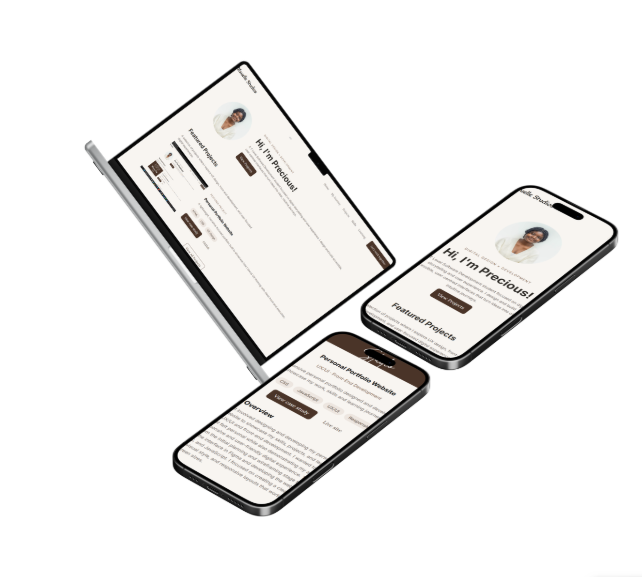

Projects
A showcase of my work, skills and learning journey in UX / UI and front-end development.
Project One

Personal Portfolio Website
UX / UI · Front-End Development
A responsive personal portfolio designed and developed to showcase my work, skills and learning journey.
Project Overview
This project involved designing and developing my personal portfolio website to showcase my skills, projects, and learning journey in UX/UI and front-end development. I wanted to create a website that felt personal while also demonstrating my ability to build a responsive and user-friendly digital experience. The project took me from the initial planning and wireframing stage through to designing the interface in Figma and developing the website using HTML, CSS, and JavaScript. I focused on creating a clear structure, consistent visual style, and responsive layouts that work across different screen sizes.
Process & Decisions
I began by sketching ideas on paper before researching how personal portfolios were structured. I then moved into Figma, where I combined my initial ideas into a more organised interface and established the visual direction for Mauelle Studios. During development, I made decisions based on both aesthetics and usability. I wanted the website to have a calm, soft and elegant feel while still being easy to navigate and understand. The name Mauelle Studios also influenced the visual direction, leading me towards a swan-inspired identity and a simple, graceful design. As I developed the website, I refined some of my original ideas. For example, I initially considered showing detailed information about every skill and tool, but realised that this could overwhelm the viewer. I simplified the Skills page and used the Learning page to communicate my development journey instead. One of the biggest challenges was adapting the design for mobile. The Learning Journey timeline was particularly difficult because the elements did not initially stack and align correctly. I had to rethink how the timeline would work at a smaller screen size while maintaining the visual style and readability of the desktop version.
You can’t move forward if you don’t look back.
This project taught me to document my work and design with clarity across devices.Web Design • Team Building • Conceptual Design • User Empathy • Data Driven Junkie
✦